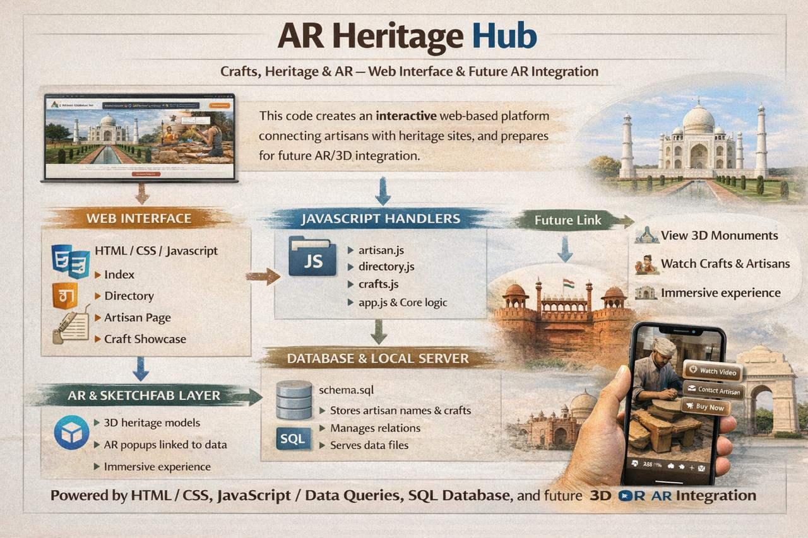

Crafts at risk
Many traditional practices are held by a small number of ageing practitioners. This project explores how digital tools can help tell their stories without replacing in-person learning.
 Living Heritage Walks
Living Heritage Walks
Living Heritage Walks is a prototype platform that connects people walking through a city with the craft knowledge held by local artisans.

Many traditional practices are held by a small number of ageing practitioners. This project explores how digital tools can help tell their stories without replacing in-person learning.
Instead of static museum labels, AR walks turn streets into an evolving archive: stories are triggered where they happened, and new material can be added over time.
A lightweight, portable stack that can plug into different local projects.
Artisans, crafts, AR stops, and support options are stored in a Bolt database, with media hosted in Bolt Storage for images and videos.
The public site is plain HTML, CSS, and JavaScript, designed to be easy to host and embed on existing cultural or tourism websites.
The AR experience runs entirely in the browser using the device camera, GPS, and compass—no app store installations required.
In a live deployment, this space would acknowledge artisans, community organizations, museums, and funders who co-create and maintain the walks. It can also outline how consent, attribution, and revenue-sharing are handled with craftspeople.